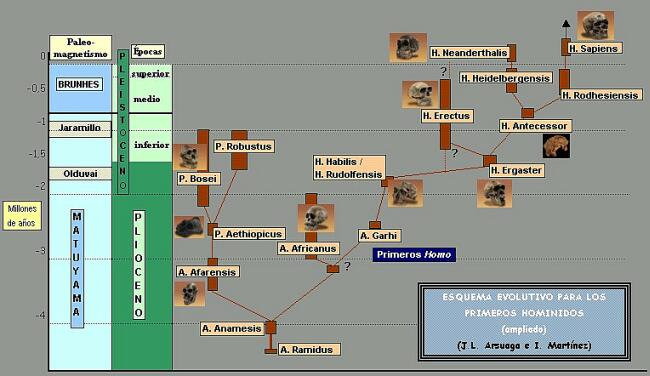

10. Entonces, si el hombre no desciende de los chimpancés actuales, ¿De qué especie desciende y dónde es factible encontrar sus restos fósiles?
En los tiempos de Darwin no se conocían restos fósiles, que pudieran relacionarse con el origen del hombre, Darwin se atrevió a proponer a África como cuna de la humanidad:
“Podemos pues con gran probabilidad afirmar que el África fue antes habitada por especies que ya no existen, que eran muy parecidas al gorila o al chimpancé; y como quiera que estás dos especies son las que más se asemejan al hombre, es también probable, que nuestros antecesores habitaran el África más bien que otro continente alguno”
—El Origen del Hombre. Pág. 210
Y Darwin no se equivocó. En el año de 1924 el anatomista Raymond Dart recibió los fragmentos del cráneo de un infante de una especie de homínido desconocida hasta entonces. Dart bautizó al fósil como Australopithecus africanus. Luego se encontraron más restos para esta especie. Los australopitecos son importantes en el conocimiento de nuestros orígenes porque son homínidos que tenían una posición bípeda, pero mantenían un cerebro pequeño. El nombre “Australopithecus” significa “Simio del sur” ya que sus restos fueron encontrados en Sudáfrica. Los A. africanus vivieron hace 3 y 2.3 millones de años.
En 1972 el Doctor Donald Johanson desenterró los restos de otra especie de Australopiteco, que bautizó: Australopithecus afarensis. Los “afarensis” están muy bien conocidos. Los primeros restos fósiles recibieron el nombre familiar de “Lucy”. Lucy tenía características que recordaban por un lado a los chimpancés, pero sus piernas y caderas estaban aptas para caminar bípedamente, como nosotros. A. afarensis vivió hace 3.9 y 3.0 millones de años.
La especie Australopithecus anamensis, más antigua que la especie a la que pertenece Lucy, es un buen candidato para ser nuestro antepasado en el periodo Plioceno. La especie Australopithecus anamensis vivió entre hace 4.2 y 3.9 m.a. El presente texto no pretende profundizar en el tema de que especies fósiles dieron origen a la humanidad moderna, a pesar de ser un tema interesante. Sin embargo, el siguiente gráfico presenta una propuesta de cómo están relacionadas las especies fósiles, teniendo en cuenta su anatomía y su ubicación cronológica en el registro geológico.
Imagen tomada de: http://www.mundofree.com/origenes/evolucion/arbolhominidos.html
11. ¿Qué nos hace a los seres humanos diferentes de nuestros primos, los grandes simios?
Los humanos compartimos el 95% de nuestro ADN con el de los chimpancés. Y aún así tenemos diferencias pronunciadas. Hablamos, escribimos, construimos y usamos complejas maquinas, creemos en ideas abstractas, etc.
Hay varias características que nos hacen diferentes de nuestros parientes simiescos. A continuación mencionaremos cinco de estas. Tengamos presente que cada una de estas características juegan un papel importante en “hacernos humanos”. De hecho, podría ser que en la integración de estas características sea donde podamos encontrar nuestra humanidad.
-
Retención de la tasa fetal de crecimiento neuronal durante la primera infancia. Si podemos mencionar una característica que nos diferencie del resto de los animales, es la retención de la tasa de crecimiento neural después del nacimiento. Ésta es probablemente la innovación que nos hace humanos. Esta característica nos da la inteligencia y, de acuerdo con algunos científicos, nos da nuestra la cultura. El cerebro de los grandes simios (orangutanes, gorilas y chimpancés) crecen rápidamente antes del parto, pero después del nacimiento su tasa de crecimiento se hace lenta. Los humanos en cambio, tenemos un crecimiento del cerebro aún hasta los dos años de edad. Durante nuestro temprano desarrollo postnatal, añadimos aproximadamente 250.000 neuronas por minuto. En el momento de nacer la proporción entre el peso del cerebro y el peso del cuerpo es similar para los grandes simios y los humanos. No obstante, al llegar a la adultez, la proporción peso del cuerpo/ peso del cerebro ha cambiado a 3.5 veces en los humanos respecto a los simios. A nivel celular, encontramos que no menos de 30,000 sinapsis se forman por segundo, en cada centímetro cuadrado en el córtex cerebral durante los cinco primeros años de vida.
Científicos como Stephen Jay Gould han afirmado que nosotros somos esencialmente fetos extrauterinos por los primeros cinco años de nuestra vida. Nuestra gestación actual sería de 21 meses si siguiéramos el patrón de maduración de los simios. El valor selectivo de la infancia podría ser el de mejorar el éxito de supervivencia de los niños cuando llegasen a la madurez. Esto podría explicar porque los humanos tienen un largo desarrollo y una baja fertilidad (comparada con los otros mamíferos) pero aún así tenemos el éxito reproductivo más grande de todos los primates.
-
El pulgar oponible, agarra fuertemente, y agarra con precisión. Como mencionábamos al comienzo de este ensayo, la capacidad de oponer el pulgar es una característica de los primates. Sin embargo, la oposición es más efectiva en la mano humana, por la gran longitud del pulgar humano.
La mano humana es única en la habilidad de manipular herramientas. Aún, mientras que el uso de herramientas está ampliamente documentado en otros primates, la combinación de mano y cerebro han hecho del uso de la herramienta humana casi sinónimo con “ser humano”. Para la elaboración de herramientas es necesario el agarre fuerte y el agarre preciso. Ambas características las podemos observar en el pulgar humano. El agarre fuerte es usado cuando sostenemos un martillo. El agarre con precisión es usado al agarrar una aguja. La relativa brevedad del pulgar de los simios interfiere con la oposición a la punta de los otros dedos en la precisión del agarre. La presencia del agarre fuerte y el agarre preciso, junto con nuestros grandes cerebros, hizo posible la creación de herramientas, desde las primitivas hachas de piedra a los ordenadores del presente.

-
Caminamos erectos. Nuestra forma de desplazamiento bípeda cambió la forma de nuestros huesos pélvicos y nuestras piernas. La pelvis humana es totalmente más corta, amplia y profunda que la de los otros primates y mamíferos en general. El hueso de la pierna, el fémur forma un ángulo cerrado con la articulación de la rodilla. El dedo gordo del pie no puede oponerse, está alineado a los demás, lo cual es una adaptación a la marcha bípeda.
Estas adaptaciones al bipedalismo tienen un costo, los cambios que han permitido el bipedalismo dificultan el parto en los humanos. La estrecha cintura y la pelvis estrecha, combinada con la reposición del sacro, estrechan significativamente el canal del parto. Sin embargo, la postura bípeda permite tener las manos libres para el cuidado de las crías, la recolección del alimento, y la fabricación de herramientas.
Perdida relativa de pelaje. Nosotros somos “El mono desnudo”. Dado que el pelaje es usado como aislante que permite mantener caliente el cuerpo. La reducción de pelo, la adición de grasa subcutánea, y los cambios en las glándulas sudoríparas podrían estar relacionadas con una termorregulación más eficiente que capacite a los humanos a mantener altos niveles de actividad por periodos más largos de tiempo sin sobrecalentarse. No sabemos exactamente que especie ancestral perdió el pelaje, dado que solamente tenemos fósiles de la parte dura de nuestra anatomía: El esqueleto.
-
Características sexuales secundarias exageradas. Nuestras características sexuales secundarias son muy exageradas si las comparamos con las de los otros primates. El pene humano es más largo que el de otros primates (esto incluye que es más largo que el del gorila o el orangután.) Es posible que el bipedalismo halla contribuido a este cambio, haciendo que el órgano masculino pudiese alcanzar la vagina de la hembra,
También es de interés que este gran órgano reproductivo carece de algo que casi todos los otros machos primates (y todos los machos simios) tienen –un hueso peniano-. Este hueso a veces es llamado el os penis o báculo. El macho humano usa un sistema hidráulico de erección del tejido eréctil antes que tener un soporte interno de un hueso.
Las hembras humanas se caracterizan por sus pechos engrandados, su copioso flujo menstrual, la menopausia, y por no tener una estación especial de ovulación. La ovulación en las hembras humanas no sólo está oculta a los machos (a diferencia de los otros primates donde la ovulación se advierte por cambios físicos y de comportamiento en las hembras) sino también a las otras hembras. Es probable que estos cambios fuesen una adaptación al establecimiento de la monogamia.
12. En resumen ¿Cómo se clasifica el hombre dentro del orden de los primates?
Lo que hemos hecho en el presente ensayo es mirar las divisiones del tronco de los primates, y profundizado sólo en aquellos grupos a los que pertenece el hombre. En resumen, la clasificación del hombre [1], de la categoría de Orden hacía las más específicas es:
ORDEN |
Primates |
SEMIORDEN |
Haplorrinos (Haplorrhini en latín) |
SUBORDEN |
Antropoideos (Anthropoidea en latín) |
INFRAORDEN |
Catarrinos (Catarrhini en latín) |
SUPERFAMILIA |
Hominoideos (Hominoidea en latín) |
FAMILIA |
Homínidos (Hominidae en latín) |
SUBFAMILIA |
Homininos (Homininae en latín) |
TRIBU |
Homininis (Hominini en latín) |
GÉNERO |
Homo |
ESPECIE |
Homo sapiens |
Recuerde que el sistema de clasificación natural permite revelar la genealogía de los seres vivos. El sistema de clasificación expuesto en este ensayo implica, no sólo que el hombre es un primate, sino que el hombre comparte un antepasado común con el resto de los primates.
13. ¿Cómo ver la oposición que a estas ideas hacen los científicos creacionistas?
En primer lugar la expresión “científicos creacionistas” es tan absurda como decir “ladrones honrados”. La razón de esto es simple: Los creacionistas no son científicos, ellos NO sacan conclusiones a partir de las evidencias Los creacionistas buscan respaldo a la creencia religiosa que los humanos fuimos creados sobrenaturalmente en su forma actual, tan sólo hace 6000 años (por mucho 10000), que no descendemos de otra especie y por lo tanto no estamos emparentados con los demás primates.
En realidad los “científicos creacionistas” son religiosos fundamentalistas que buscan desprestigiar la enseñanza de la biología evolutiva en las escuelas de los países donde operan. El 19 de marzo de 1981 los creacionistas lograron la aprobación de la “Ley de tratamiento igualitario para la Ciencia Creacionista y la Ciencia Evolutiva” en Arkansas (Ley 590 de 1981), esto llevo a que la Unión Americana para las Libertades Civiles (ACLU) demandara la ley por considerarla una violación a la primera enmienda de la constitución de los EEUU (El gobierno no debe legislar en materia religiosa).
Tras escuchar a creacionistas, religiosos no-fundamentalistas, filósofos de la ciencia y científicos, el juez Overton estableció las siguientes características de la ciencia:
Se guía por las leyes de la naturaleza.
Ha de ser explicativa en lo que se refiere a las leyes de la naturaleza.
Es comprobable frente a hechos empíricos.
Sus conclusiones son provisionales, es decir nuevos datos pueden modificar una teoría total o parcialmente.
Los hechos científicos deben ser capaces de superar las pruebas que intentan refutarlos.
Ese mismo día, el 5 de enero de 1982, el Juez Overton vetó indisolublemente la puesta en marcha de la ley 590 en Arkansas.
Al examinar el proceder de las organizaciones creacionistas como el ICR (Institute for Creation Research) o el GRI (Geoscience Research Institute) queda claro que no cumplen con los postulados mencionados anteriormente. El ICR (patrocinado por la Iglesia Bautista) y el GRI (patrocinado por la Iglesia Adventista del Séptimo Día) no son institutos científicos, tan sólo simulan serlo. Para poner un ejemplo, en el ICR se pide a los investigadores que firmen una declaración en la que se comprometen a no publicar nada contrario a la interpretación literal de la Biblia.
Resumiendo este punto podemos decir que, cuando las evidencias contradicen una hipótesis, los científicos rechazan la hipótesis y los teólogos rechazan las evidencias. Lo segundo es propio de los creacionistas.
El español Santiago Ramón y Cajal, un importante histólogo del sistema nervioso, concluyó respecto a nuestro lugar en la naturaleza: “A título provisional, considera, con zoólogos y anatómicos que el hombre tiene más de mono que de ángel y que carece de títulos para envanecerse y engreírse.”
Nota:
BIBLIOGRAFÍA CONSULTADA
CLUTTON-BROCK, Tim. 1991. Los Primates, en Primates. Animales del Mundo. Ediciones Folio. Estella.
CURTIS, Helena. 1995. Biología. Editorial Médica Panamericana. Buenos Aires.
DARWIN, Charles. 1981. El Origen de las especies. Ediciones EDAF. Madrid.
DARWIN, Charles. 1981. El Origen del Hombre. Ediciones EDAF. Madrid.
FEAGLE, J.G. 1999. Primate Adaptation and Evolution. Academic Press. San Diego.
GYENIS, Gyula. 2002. New findings- New problems in classification of hominoids. En: Acta Biologica Szegediensis. Volume 46 (1-2): 57-60, 2002.
GILBERT, Scott F. Developmental Biology. Second Edition. Sinauer Associates. Inc. Sunderland.
GORE, Rick. Los Primeros Pasos. En: National Geographic Magazine. Febrero de 1997.
HICMAN, Cleveland. 1998. Principios Integrales de Zoología. Décima edición. McGraw Hill-Interamericana.
KARDONG, Kenneth V. 1999. Vertebrados: Anatomía comparada, función, evolución. Segunda edición. McGraw-Hill Interamericana. Madrid.
MILNER, Richard. 1995. Diccionario de la Evolución. Bibliograf. Barcelona.
NOWAK, Ronald. 1999. Walker’s Primates of the World. The Johns Hopkins University Press. Baltimore.
Los humanos en el grupo de los primates - Índice
Volver a la sección Ciencias de los orígenes
Comentarios
Comments powered by Disqus